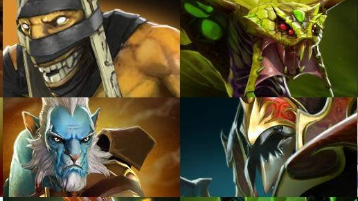

<audio id="shadman" >
	<source src="https://static.wikia.nocookie.net/dota2_gamepedia/images/1/1e/Vo_shadowshaman_shad_spawn_02.mp3" type="audio/mp3">
</audio>

<audio id="veno" >
	<source src="https://static.wikia.nocookie.net/dota2_gamepedia/images/5/5e/Vo_venomancer_venm_spawn_01.mp3/revision/latest?cb=20201022212536" type="audio/mp3">
</audio>

<audio id="pl" >
	<source src="https://static.wikia.nocookie.net/dota2_gamepedia/images/8/8e/Vo_phantom_lancer_plance_spawn_01.mp3/revision/latest?cb=20201018134622" type="audio/mp3">
</audio>

<audio id="nyx" >
	<source src="https://static.wikia.nocookie.net/dota2_gamepedia/images/9/97/Vo_nyx_assassin_nyx_spawn_01.mp3/revision/latest?cb=20201017160847" type="audio/mp3">
</audio>


<map name="map">
<!-- #$-:Image map file created by GIMP Image Map plug-in -->
<!-- #$-:GIMP Image Map plug-in by Maurits Rijk -->
<!-- #$-:Please do not edit lines starting with "#$" -->
<!-- #$VERSION:2.3 -->
<!-- #$AUTHOR:YURIY -->
<area shape="rect" coords="6,0,259,142" onclick="document.getElementById('shadman').play()" />
<area shape="rect" coords="260,1,511,135" onclick="document.getElementById('veno').play()" />
<area shape="rect" coords="7,144,262,285"  onclick="document.getElementById('pl').play()" />
<area shape="rect" coords="263,143,510,285" onclick="document.getElementById('nyx').play()" />
</map>
